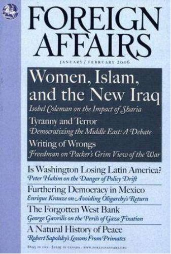
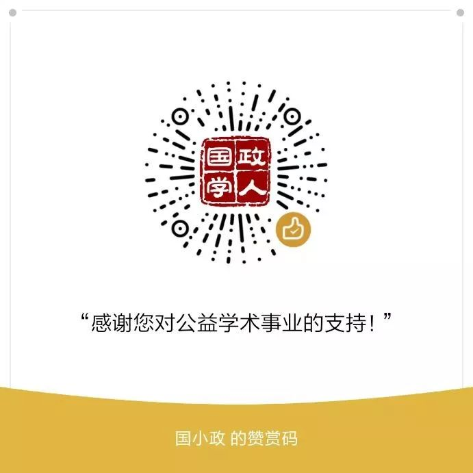

收录于合集

作品简介
【作者】
Keren Yarhi- Milo是普林斯顿大学政治学系政治学和国际事务副教授，研究领域为国际安全、外交决策、国家间沟通和危机谈判、情报、美国中东政策。已出版著作《Knowing the Adversary：Leaders, Intelligence, and Assessment of Intentions in International Relations》，《Who Fights for Reputation? The Psychology of Leaders in International Conflict》。曾于2010年获得肯尼思·华尔兹最佳博士论文奖。在《国际研究季刊》、《国际组织》、《国际安全》和《安全研究》等期刊上发表过文章。
【 编译】 赵雷（国政学人编译员，山东大学国际关系专业硕士生）
【校对】 周雨橙
【审核 】 扎西旺姆
【排版】 柯晗燕
【 来源 】 Yarhi-Milo, K. (2018). After credibility: American foreign policy in the trump era. Foreign Affairs, 97 (1), 68-7.
期刊介绍

《外交事务》（ Foreign Affairs ），成立于1922年，是美国外交关系委员会发布的国际关系和美国外交政策的美国杂志，被誉为“美国最具影响力的外交政策杂志”之一。根据2018年的期刊引文报告（Web Of Science）, 该期刊的影响因子为4.390，在“国际关系”类别的91种期刊中排名第3。在其悠久的历史中，该杂志发表了许多具有开创性的文章，包括乔治·凯南(George Kennan) 1947年发表的X Article，以及塞缪尔·亨廷顿(Samuel P. Huntington) 1993年发表的《文明的冲突》。此外，重要学者、政府官员和政策领导人经常出现在该杂志的页面上。
信誉之后：川普时代的美国外交政策
After Credibility：American Foreign Policy in the Trump Era
内容提要
川普特立独行的行事风格与反复无常的言论使美国外交政策的信誉受损，本文分析了美国在外交政策上信誉下降的原因、过程和可能导致的后果，并指出作为一个超级大国，可预测性和信誉是美国的资产（assets），而不是负债（liabilities）。
文章导读
一、 介绍 ****
“相信我。”美国总统唐纳德·川普无数次使用这句话，不论他是在谈论反恐(“我比将军们更了解反恐，相信我”)，沿着美墨边境建一堵墙(“相信我，不管怎样，我们会得到那堵墙”)，或者伊朗核协议(“相信我。哦，相信我……这是一笔糟糕的交易”)，都如此说道。
特朗普希望人们相信他的话。但民意调查显示，三分之二到四分之三的美国人认为他不值得信任。在国际上也好不到哪里去。在美国的传统盟国中，如澳大利亚、法国、德国、日本、约旦、墨西哥、韩国和英国等，大多数公民对美国总统没有信心。
换句话说，川普面临着信誉缺口（reputation gap）。这也许不足为奇，据《纽约时报》报道，在其总统任期的前40天，川普每天都在说一些非真实的事情。然而他的行动更甚一筹：川普对一些美国最久远、最重要的承诺产生了怀疑，譬如美国对北约的支持——特朗普在今年1月称北约“过时了”(obsolete)，但在今年4月又宣布北约“不再过时”。他在政策立场上也反复无常，对外交协议频繁变卦，公然破坏自己政府成员的努力，在外交协议中变卦，包括《巴黎气候协议》和《伊核协议》。
虽然美国的信誉并不仅仅来源于行政部门的言论，但川普的行为会带来一定的后果。 **由于总统削弱了美国在国内外的信誉（ credibility），盟友们将不敢轻易相信美国的承诺，同时，美国的威慑也将失去力量，发生致命误判的风险将会增加。为了表明决心，美国可能需要采取代价更大的极端行动。**至于其他信誉的来源，比如美国的军事实力和对美国机构的普遍信任，可能会减轻川普造成的一些损害。但是，没有人能替代一位言辞依然重要的总统。
二、名声 在外 ****
诺贝尔奖得主、核战略家托马斯·谢林(Thomas Schelling)曾写道，“面子是少数几件值得争取的事情之一。”在20世纪的大部分时间里，政策制定者们认为，要使威胁可信，并让盟友和对手相信美国言出必行，信誉是至关重要的。例如，在20世纪50年代，美国介入鲜战争，部分原因是为了表明其积极对抗苏联的决心。越战中，由于对声誉（reputation）的担忧，即使决策者得出了美国将输掉战争的结论，美军依然在越南驻扎了很长时间。
在后冷战时代， 大多数美国领导人认为，信誉对于维持美国的联盟体系和战后的自由秩序至关重要 。这种想法对美国干预海地、科索沃和伊拉克的决定发挥了作用。这些干预的理由和结果各不相同，但在每个案例中，领导人都以实际行动证明着自己的言论。
国际政治中，一个行为体的信誉（ credibility）与他的声誉（reputation）联系在一起，政治学家通常将其分为两类。罗伯特·杰维斯(Robert Jervis)所称的“信号声誉”(signaling reputation)指的是一个行为体做出威胁或兑现承诺的记录。另一方面，“一般声誉”（general reputation）指的是更广泛的属性，比如一个行为体是愿意合作的或者是真诚的。这两种形式的声誉可以相互影响:例如，对一个国家信号声誉的持续损害可能会侵蚀它一般声誉的可信度。然而，一个国家的一般声誉也可能是不同的。例如，在朝鲜战争之前，美国没有对韩国做出任何具体承诺。因此，选择进行干预并不影响美国的信号声誉，倒可能树立起有决心的一般声誉。
语境也会影响信誉。 例如，当一位总统向盟友做出保证时，可能会被认为是不值得相信的，但当他威胁要采取军事行动时，他仍然可能被认为是可信的。或者，他可能被认为在社会或经济问题上值得信任，但在外交政策上则不然。有时，总统在国内的信誉会影响他在国外的信誉。1981年，美国总统罗纳德·里根兑现了他的威胁，解雇了11000多名空中交通管制员，因为他们罢工违反了联邦法律。一些政策制定者和观察人士报告说，如果不是有意为之的话，这一举动对美国的外交政策产生了重大影响:这使苏联人认识到里根在威胁言论上并没有虚张声势。
一些学者对声誉是否重要持怀疑态度。政治学家达里尔•普雷斯(Daryl Press)认为， 信誉与领导人坚持兑现威胁的记录无关。相反，对手评估的是军事能力的平衡和在紧要关头的利益。 普雷斯认为，以古巴导弹危机为例，肯尼迪政府的成员认为苏联领导人赫鲁晓夫的威胁是高度可信的，尽管赫鲁晓夫一再撤回要求西方军队撤出西柏林的最后通牒。在普雷斯看来，赫鲁晓夫的信誉并非来自他的信号声誉，而是来自于华盛顿对核力量平衡和苏联利益的看法。同样，政治学家乔纳森·默瑟(Jonathan Mercer)认为，从历史上看，在威胁面前退缩，不会使国家在对手中产生出软弱的声誉，坚定立场也不会让其在盟友间赢得决心坚定的声誉。
这些学者收集的经验证据很重要。但他们的观点绝不代表学术共识。例如，政治学家弗兰克•哈维(Frank Harvey)和约翰•米特顿(John Mitton)认为， 坚持兑现威胁的声誉，大大增强了一个国家的强制力。他们重点研究了 美国对波斯尼亚、科索沃和伊拉克的干预行为，事实表明，当对手研究了美国在类似情况下的言论和行为后，推断出了美国的决心并预测到美国可能的行动。本文作者与政治学家亚历克斯•魏西格（Alex Weisiger）的研究工作表明，在过去的危机中退缩的国家更有可能再次受到挑战，而树立起决心坚定声誉的那些国家不太可能面临军事对抗。其他研究也表明了那些违背了对盟友承诺的国家如何树立起不可靠的声誉，以及在未来赢得他国信任的可能性是如何降低的。 这项工作表明，良好的声誉对成功的外交仍然至关重要。
**
**
三、 臭名远扬 ****
不幸的是，美国总统的声誉在最近几年受到了侵蚀。川普应该受到大部分指责，但不是全部。2013年夏天，叙利亚总统阿萨德越过了美国总统奥巴马在化学武器问题上的“红线”之后，美国的信号声誉开始下降。2012年8月20日，奥巴马曾表示，（叙政府）调动或使用这些武器，他将“改变算盘”（change (his) calculus），许多人将这番言论解读为军事行动的威胁。2013年8月，阿萨德对反对派据点发动了一系列沙林毒气袭击，导致1400名叙利亚人死亡。然而，奥巴马没有以军事打击作为回应，而是同意了一项由俄罗斯促成的协议，阿萨德承诺拆除他的化学武器库。
在接受《大西洋月刊》杰弗里·戈德堡（Jeffrey Goldberg）的采访时，奥巴马为自己的决定辩护说:“为了证明你愿意向某人扔炸弹而向其扔炸弹，这是使用武力的最糟糕理由。”分析人士几乎都认为，奥巴马不应仅仅为了声誉而推行一项糟糕的政策;然而，当总统做出承诺却没有采取行动时，就会产生政治和战略成本。如果奥巴马没有打算坚持兑现威胁，他在一开始就不应该提出。最终，外交解决方案没有奏效:阿萨德继续使用化学武器。（编者按：叙政府对2013年9月之后的使用化武指控均予以否认。譬如：2017年4月在反对派控制的杜马镇发生的化武袭击，西方国家指控是叙政府所为，叙方俄方予以否认。真相尚不明朗，请读者对本段最后一句论断保持怀疑态度。）
不管他们是支持还是反对奥巴马不加大对叙利亚干预的决定，共和党人和许多民主党人都认为，红线事件已经损害了美国的信誉。鹰派认为，为了恢复美国决心的声誉，华盛顿应该更愿意使用武力。这是在奥巴马离任后对美国外交政策的一种误导，也是一种潜在的对如何修正美国外交政策的危险评估。 信誉需要的是一致性，而不是好战性。下一任总统本可以通过展示美国承诺和威胁的完整性来修复损害的信誉。
相反，川普表现出的强硬和冲动让情况变得更加复杂，强硬可能会带来一些战略优势，而冲动会削弱他的信誉。虽然通过轰炸叙利亚、重新参与阿富汗事务，以及对朝鲜施加更多压力，可能使川普赢得了有决心的一般声誉，并传达出他比前任更乐于使用军事力量的信息。然而，总统在关键竞选承诺上摇摆不定的记录、他在推特上古怪而不准确的情绪爆发、他夸大的威胁、以及他即兴的保证，都让观察人士严重怀疑他的话。
川普在言行上“变卦”的清单很长。2016年大选获胜后，川普在就职前与台湾地区领导人通了电话。这严重违背了中美间的协议;自1979年美国与台湾断绝外交关系以来，没有一位美国总统或候任总统与台湾地区领导人通话。通话结束后，川普宣布他正在考虑放弃“一中”原则，而对这一原则的承认是过去40年里中美维持良好关系的基础。但在2017年2月，他重新考虑并决定坚持这项原则。在竞选期间，川普威胁要在贸易方面针对中国，并承诺将中国列为汇率操纵国。他还暗示，美国应该放弃其不扩散核武器的承诺，并建议日本和韩国开发自己的核武器。他后来撤销了所有这些立场。（编者按：本文发表于2018年初，中美贸易争端开始于2018年7月，作者撰写本文时认为挑起贸易争端只是川普夸大其词。）
目前与朝鲜的危机是这种模式的最新表现。特朗普在上任之初曾将朝鲜领导人描述为“聪明人”（ smart cookie），并表示他“很荣幸能与他见面”（ honored to meet him）。但他后来称其为“小火箭人”（ Little Rocket Man），并在9月威胁要“彻底摧毁”朝鲜。
川普还可能以牺牲国家利益为代价维护自己的信号声誉 。例如，川普在2017年10月决定拒绝认定伊朗遵循核协议，兑现了竞选承诺。因为他表现出了一致性，这一决定可能巩固了他个人的信誉。但川普违背了美国的正式承诺，却没有拿出证据证明伊朗没有遵守条约，这也损害了美国的一般声誉。这样的举动可能会破坏华盛顿在未来谈判中的外交影响力。如果其他国家认为美国的政治承诺在权力交接后无法兑现，它们就不太可能做出重大或痛苦的让步。川普早些时候退出巴黎气候协议的决定也带来了类似的问题。当然，任何希望改变现状的美国总统都必须面临这样的两难境地:如何在不损害美国信誉的前提下兑现自己的承诺。但目前尚不清楚，川普是否担心他的决定会对更大范围内的声誉造成影响。
四、 理性的非理性？ ****
川普圈子里的一些人声称，有一个绝妙的策略支撑着他古怪的行为，总统明白他不稳定的公众姿态所产生的后果。 根据这一观点，川普看似不合理的言论是精心策划的策略的一部分，目的是让对手认为他疯了。 例如，2017年9月，川普要求他的贸易代表恐吓韩国谈判代表。据报道，川普说:“你告诉他们，如果他们现在不做出让步，这个疯子就会退出美韩自由贸易协定。”在朝鲜问题上，逻辑很简单:如果特朗普能让朝方相信他是非理性的，并且愿意接受军事对抗的高昂代价，那么他的恐吓可能会让朝方屈服。
川普不是第一个尝试这种策略的美国总统，学者们称之为“疯子理论”（“the madman theory” ）或“非理性的理性”（the rationality of irrationality）。据报道，在越南战争期间，理查德·尼克松总统要求他的国家安全顾问亨利·基辛格告诉苏联人和北越人，他是不可预测的，甚至可能在越南使用核武器。但苏联、越南识破了尼克松的虚张声势，这一招失败了。玩疯子游戏的第一条规则是永远不要公开声明你在玩疯子游戏。特朗普做到了。 然而一味追求这种方法只会让他显得幼稚。
川普的辩护者提供的另一种解释是， 总统故意制造歧义，以使对手失去平衡 。在竞选期间，川普表示他不会“向敌人广播我的计划”。毫无疑问，在精心设计和持续实施的情况下，模棱两可的声明可以带来战略上的好处，比如允许领导者向多个听众发表讲话，而这些听众可能有相反的利益，同时又不会疏远任何一方。但川普的声明在战略上并不含糊;事实上，它们通常都很清楚。问题是它们不一致。 这种冲动的语气，以及实际上他的一些言论是在半夜通过推特传达的，进一步降低了信誉。
当被要求解释川普的行为时，他的一些支持者甚至建议，不应该把总统的话当真。川普的顾问凯莉安·康韦(Kellyanne Conway)告诉CNN的克里斯·科莫(Chris Cuomo)，判断总统的标准应该是“他心里想什么”，而不是“他嘴里说什么”。美国的盟友们面临着一项艰巨的任务，即认清川普的内心世界，他们不太可能会觉得这个建议让人安心。
五、 信誉计算 ****
美国公众和世界其他地方可能已经习惯了川普不可预测的言论和相互矛盾的推文。在某些情况下，他食言的声誉甚至可能让人安心:全世界都知道，他不太可能兑现一些更令人不安的声明，比如他威胁要“彻底摧毁”朝鲜。但这只是小小的安慰。当他的话真的需要算数的时候会发生什么?在下一次危机中，当人们无法信任总统能够可信地传达美国的意图时，美国如何能够威慑对手并安抚盟友?
乐观主义者认为，川普最终会认识到信守诺言的重要性。 在这种观点看来，川普前后不一致的原因是他缺乏经验，尤其是在外交政策方面。 川普本人有时也承认这一点。川普曾批评在朝鲜问题上批评中国，但在与中方讨论后改变了立场。特朗普告诉《华尔街日报》：“听了10分钟后，我意识到这并不容易。”同样，总统在当选后改变了他对美国阿富汗战争、俄罗斯干预2016年大选以及美国对叙利亚政策的立场，大概是因为他对这些问题有了更多的了解。
总统的外交政策观点在其任期内发生变化并不罕见。但川普学习过程中令人不安的一点是，他的新观点和旧观点一样不固定，而且似乎不是经过深思熟虑的重新评估与反思而形成的。相反，这些观点似乎是由他的情绪，由他交谈过的最后一人或他在网络新闻上看到的最后一则观点所决定的。
另一个令人欣慰的是川普的幕僚们，许多观察人士称他们为川普政府中的“成年人”。白宫幕僚长凯利(John Kelly)、国防部长马蒂斯(James Mattis)、国家安全顾问麦克马斯特(H. R. McMaster)、副总统彭斯(Mike Pence)和国务卿蒂勒森(Rex Tillerson)都 试图澄清总统的声明，为美国的政策增添连贯性和稳定性，或者似乎完全无视总统的声明。 这些人现在是美国公共外交的门面:观察家们转向他们来了解美国的政策。如果总统让这种情况持续下去，将令人安心。 但川普公开打压顾问，破坏了他们挽救华盛顿声誉的努力。 就在蒂勒森证实美国与朝鲜直接对话的一天后，川普在推特上说，他的国务卿是在“浪费时间”。“雷克斯，省省吧，”他写道。川普在朝鲜问题上的言论损害了美国的信誉，可能导致一场灾难性的、本可以避免的战争。
如果有理由保持谨慎乐观的话，那就是总统的声誉并不是对手和盟友判断美国意图的唯一考虑因素。对声誉重要性持怀疑态度的人可能会指出， 美国的军事实力、对美国重大利益的广泛了解，以及在世界各地采取军事行动维护现状的长期记录，继续使美国能够阻止对手越过既定的红线。一个国家的信誉并不完全取决于其总统的信誉。 外国观察人士可能不相信川普，但他们可能仍然对美国的政治机构和公众舆论保持一定程度的信心，认为这是对总统行动的限制。
然而，与此同时，总统的信号声誉受损，增加了对手误解美国红线、误判美国反应的可能性，尤其是在东欧和中东等有争议的地区。世界各国领导人也可能认为，有时候为了他们的方便，不考虑或忽略美国的总统是可以接受的;当他们读到蒂勒森称川普是“白痴”时，他们得出这个结论是可以原谅的。(蒂勒森的发言人对此予以否认，但蒂勒森本人并未否认。)
**声誉受损也可能使美国更难通过强制手段实现其目标 ——威胁和承诺，**它们在传统上行之有效是因为它们被认为会危及美国的信誉。在川普的领导下，美国可能不得不采取更危险的策略来显示决心，比如军事边缘政策，甚至是军事力量。这种战术会带来严重且本不必要的风险升级。
随着总统的信号声誉下降，美国也将不得不更加努力地说服盟友，让他们相信自己会信守承诺。华盛顿的盟友可能会要求更多具体的证明，证明美国会原封不动地提供安全保障。 对美国保护的信任下降可能会导致美国的盟友变得更加自力更生 (川普希望他们这样)，但也可能鼓励美国的对手更大胆地试探边界。
六、 让言辞再次变得重要 ****
川普的信誉危机的长期后果仍不明朗。美国无法控制其他人从总统的行为中所得出的结论。但国际观察人士将关注美国政治体系如何回应川普的言论，以及何时、如何抵消这种言论。即使川普政府时期的美国外交政策在行动上（如果不是在言辞上）保持一致和连贯，美国也已经为川普的行为付出了重大代价:总统不再被视为拥有外交政策的最终发言权。外国领导人正在转向其他地方来评估美国的意图。由于美国国内政治体系如此两极分化，执政党如此分散，沟通意图变得比以往任何时候都更加困难。假如美国发出越来越多跨党派的一致信号，川普对美国信誉的损害就会越小。
然而，就目前而言， 随着川普的声誉受到损害，美国在威慑、胁迫和保证方面的代价已经上升，误判和危机升级的可能性也随之上升。 川普可能认为，可预测和可信的外交政策是软弱的表现。他是错的。对于像一个小国来说，看起来不可预测可能会让一个领导人暂时拥有超越自身的力量。 但不管川普喜欢与否，美国是一个全球超级大国，对它来说，可预测性和信誉是 资产（ assets），而不是负债（liabilities）。
**
**
_ ** _ ** _ ** _ 本文由国政学人独家编译推荐，文章观点不代表本平台观点，转载请联系授权。**__ 扫下方二维码查看往期精彩
【联盟战略】为什么亚洲没有北约？集体认同，地区主义和多边主义的起源丨国政学人 第291期
【中英关系】脱欧立场身份与英国对华民意丨国政学人 第293期
【战争研究】暴力的合法性：对海湾战争的批判性分析丨国政学人 第294期match
【冲突研究】代际冲突？青年膨胀与政治暴力 | 国政学人 第295期
【新刊速递】第09期 | International Relations of Asia-Pacific Vol.19,No.3
【新刊速递】第10期 | International Studies Review, Volume.21, No.3, 2019
【新刊速递】第11期 | Cooperation and Conflict, Vol. 54, No. 4, 2019
【新刊速递】第12期 | International Affairs, Vol.95, No.6，2019
分类导览 1
分类导览 2


点“在看”给我一朵小黄花